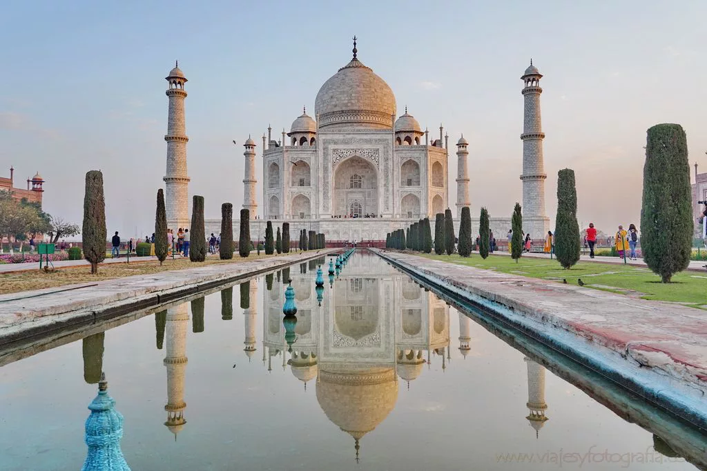

Taj Mahal quiere decir "corona de los palacios" y es una de las siete maravillas del mundo. Fue construido entre 1631 y 1653 en Agra, la India. Se trata de un mausoleo dedicado a la esposa favorita del emperador Shah Jahan, llamada Arjumand Banu Begum, conocida como Mumtaz Mahal.
